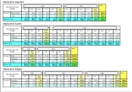
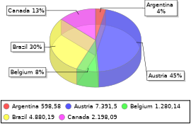
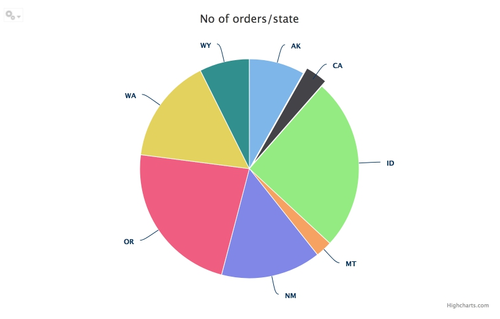
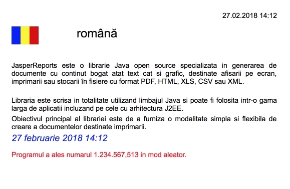
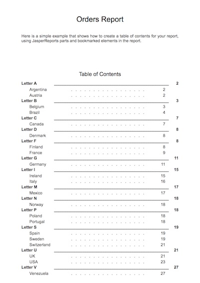
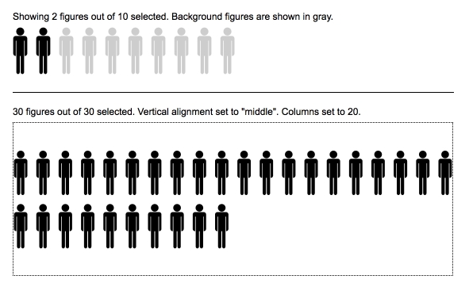
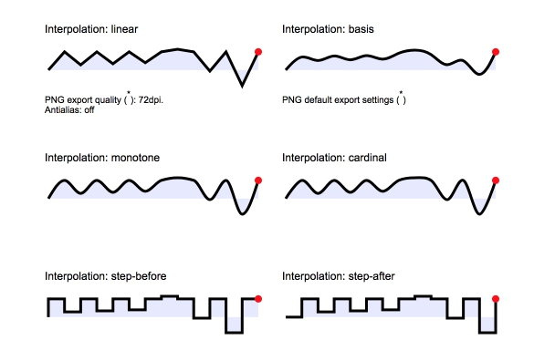

Welcome to the JasperReports IO Demo App
This is the sample web application that demonstrates the capabilities of the JasperReports IO reporting service.
The JasperReports IO (JRIO) is an HTTP based service which exposes its report generating functionality through a REST API.
The reporting service inside JRIO is based on the functionality of the JasperReports Library (JRL). JRIO acts like a REST API wrapper on top of the reporting Java API of the JRL.
In this demo application, you'll find sample reports and examples showing how to embed the reporting service into your own application.
The JRIO service can be deployed in various ways, ranging from monolithic web application, with all its specialized sub-services placed together in the same application (good for testing and small scale deployments), to container based deployments in the Cloud, where specialized sub-services run in separate containers and are able to scale independently while working together to deliver a single embeddable reporting service (suited for large scale deployments).
Quick Start Guide
For more detailed documentation, see the TIBCO JasperReports IO User Guide.
You see this demo application because you have already installed and launched one of the JasperReports IO distributions, which provides this demo application as a convenience, to help you getting started with the product.
Installation
There are several types of distributions available for JRIO and you have probably used one of the following:
- JasperReports IO Standalone Binary Archive
Archive containing the JRIO binaries as well as the demo web application and the sample repository.
Configuration
You have probably launched the JRIO reporting service using the default configuration it came with in the distribution you have used.
Below is a list of some of the configuration settings you can change, to improve your experience with the product or to customize it to your needs.
Web Application Server
JRIO start command on Linux:
./jre/bin/java -Xms256m -Xmx512m -jar ./jetty/start.jar
jetty.base=./jrio --start
-Djetty.http.port=8080 -DSTOP.PORT=8989 -DSTOP.KEY=st0p_J3Tty
JRIO start command on Windows:
jre\bin\java -Xms256m -Xmx512m -jar jetty\start.jar
jetty.base=jrio --start
-Djetty.http.port=8080 -DSTOP.PORT=8989 -DSTOP.KEY=st0p_J3Tty
JRIO start command on macOS:
./jre/Contents/Home/bin/java -Xms256m -Xmx512m -jar ./jetty/start.jar
jetty.base=./jrio --start
-Djetty.http.port=8080 -DSTOP.PORT=8989 -DSTOP.KEY=st0p_J3Tty
Setting cache size to 4000 objects, to match 4Gb of heap memory:
<local-cache name="virt" configuration="virtPassivation">
<memory>
<object size="4000" />
</memory>
</local-cache>
The JRIO reporting service is delivered by a Java web application deployed in an Eclipse Jetty server instance shipped inside the JRIO distribution package.
In the JRIO Standalone Binary Archive distributions, there are two scripts placed in the root folder of the archives, which help you start and stop the Eclipse Jetty server and thus the JRIO reporting service deployed inside it.
The start script contains the command which starts the Eclipse Jetty server and it specifies several startup configuration parameters that can be changed to better suit your particular environment and needs.
Java Heap Memory
There are two command line arguments for specifying the amount of heap memory allocated to the Java Virtual Machine:
-Xms256m -Xmx512m
Most of the heap memory allocated to the JVM is used to cache report execution related objects. When increasing the size of the allocated heap memory, it is recommended that the maximum number of objects that can be cached by the reporting application to be increased proportionally, to thus make use of the additional memory. This settings is controlled by the objectsizeproperty of the local-cache entry namedvirt, of thevirtPassivationconfiguration found in the[JRIO_WEB_APP]/WEB-INF/infinispan.xmlfile. A good practice is to match this size property to the number of megabytes of heap memory allocated to the JVM.Jetty Port
By default, the Jetty server starts on port8080, but in case this port is already used on your target machine, you can change it to some other available port number:
-Djetty.http.port=8080Jetty Stop Port and Key
The last two settings are needed by the stop script. If you change them in the start script, make sure you also change them in the stop script:
-DSTOP.PORT=8989 -DSTOP.KEY=st0p_J3Tty
For more details about how to further configure Eclipse Jetty server at startup, please consult the Jetty documentation.
Repository
The report samples presented in this demo application are delivered by the JRIO reporting service using report templates, sample report data and other required resources found in a file based repository which is part of the same JRIO distribution you are currently using.
The type of repository, its location and other specific repository implementation properties can be specified in a Spring configuration file at:
[JRIO_WEB_APP]/WEB-INF/applicationContext-repository.xml
Repository location relative to Web application real path:
<bean class="com.jaspersoft.jrio.common.repository.WebappRelativeRepositoryFactory">
<property name="jasperReportsContext" ref="baseJasperReportsContext"/>
<property name="root" value="../../../repository"/>
</bean>
- Repository folder relative to Webapp folder
In the JRIO Standalone Binary Archive distributions, the file based repository containing the sample reports used by this demo application is placed under the/repositoryfolder of the extracted archive.
Since this repository folder is located relative to the folder where the JRIO web application is deployed, we are using a special repository implementation (WebappRelativeRepositoryFactory) which is able to locate the real path on disk for the web application at runtime, and then moves up 3 folders to reach the JRIO installation folder, from where the repository folder is found.
Absolute path repository location:
<bean class="com.jaspersoft.jrio.common.repository.FileSystemRepository">
<constructor-arg><ref bean="baseJasperReportsContext"/></constructor-arg>
<constructor-arg><value>/mnt/jrio-repository</value></constructor-arg>
</bean>
- Repository folder absolute path
There is another file based repository implementation available in the product, for specifying the absolute path on disk for the repository folder (FileSystemRepository). You could use it to point JRIO to some other repository of your own, or to add a new repository to the existing ones.
AWS S3 bucket repository:
<bean class="com.jaspersoft.jrio.common.repository.s3.S3RepositoryService">
<property name="jasperReportsContext" ref="baseJasperReportsContext"/>
<property name="s3Service">
<bean class="com.jaspersoft.jrio.common.repository.s3.S3ServiceFactory">
<property name="region" value="us-east-1"/>
<!--
<property name="accessKey" value="put-id-here"/>
<property name="secretKey" value="put-key-here"/>
-->
</bean>
</property>
<property name="bucketName" value="jrio-repo-sample"/>
<property name="pathPrefix" value="jrio-repository/"/>
</bean>
- AWS S3 bucket repository
The product comes also with a built-in repository implementation (S3RepositoryService) which allows connecting to an AWS S3 bucket as repository for report resources. The bucket can be public, accessed without credentials, as it is the case with one such bucket we use in this demo, or can be accessed securely, using AWS credentials.
Report Execution Contexts
The JRIO repository is a folder based structure where the report templates and other report related resources are stored and from where they are retrieved when reports are executed by the JRIO reporting service.
The main entry point into the report execution process is the master report template (source *.jrxml file or
compiled *.jasper file), which is specified using its absolute path within the repository folder structure
(its extension being optional), and which in turn can reference other resources from the repository during
the report execution.
Since the JRIO reporting service leverages the reporting functionality of the JasperReports Library, you can learn more about how to create report templates and how to deploy them in the repository by following the JasperReports Library documentation.
For example, a report having its main template file at the following location within the repository:
/samples/reports/chartcustomizers/ChartCustomizersReport.jrxml
has its report execution context configured using the following file:
/samples/reports/chartcustomizers/JR_INF/context.xml
Notice that the
ChartCustomizersReport.jrxmlfile and theJR-INFfolder have the same parent folder.
When a report is executed by JRIO, it is executed into a so called report execution context. Each report has such context defined by the classpath it uses when it is run and by the configuration properties which are set in this context and tailor the behavior of the reporting engine.
The report execution context for a report is configured using a context.xml file placed in a folder called JR-INF,
which has the same parent as the report's main template file.
If multiple report templates are found in the same folder, they share the same context found in
the JR-INF subfolder that accompanies them.
This means that one way to make sure a report template has its own report execution context that it does
not share with any other report, is to isolate this report template into its own subfolder,
where a JR-INF folder would define a report execution only for this single report present there.
Report Execution Context Inheritance
Report execution contexts inherit from one another and this inheritance can be controlled.
For example, the report execution context defined at:
/samples/reports/chartcustomizers/JR_INF/
inherits from both the:
/samples/reports/JR-INF/
context and the:
/samples/JR-INF/
context, if the respective
JR-INFfolders and theircontext.xmlare present (JR-INFfolders are optional).
- Folder Inheritance (Default)
By default, any report execution context defined by aJR-INFfolder somewhere in the repository, inherits from the contexts defined by theJR-INFfolders found in the parent folders up towards the root folder of the repository.
For example, if we want the report execution context at:
/samples/reports/chartcustomizers/JR-INF/context.xml
to inherit from a sibling context at:
/samples/reports/unicode/JR-INF/context.xml
instead of the default parent folder inheritance, we need to add this to the
context.xml:
<context>
<parentContext>
<path>/samples/reports/unicode</path>
</parentContext>
...
</context>
- Direct Inheritance
The default inheritance mechanism which follows repository structure can be disabled and replaced by direct parent context reference within thecontext.xmlfile using the<parentContext>tag as follows:
<context>
<parentContext>
<path>/parent</path>
</parentContext>
...
</context>
The path to the parent context needs to specify the absolute repository path of the parent folder
containing the target JR-INF context that we want to use as parent context.
Notice that the path does not contain the JR-INF folder, just the parent folder of that target
report execution context.
Report Execution Context Classpath
For example, the report having its main template file at:
/samples/reports/chartcustomizers/ChartCustomizersReport.jrxml
uses custom Java code packaged in the
JARfile at:
/samples/reports/chartcustomizers/JR_INF/lib/repo-sample.jar
by referencing it in the
context.xmlfile at:
/samples/reports/chartcustomizers/JR_INF/context.xml
as follows:
<context>
<classpath>
<entry><path>samples/reports/chartcustomizers/JR-INF/lib/repo-sample.jar</path></entry>
</classpath>
...
</context>
As a Java reporting library, JasperReports has various extension points which allow the customization
of its functionality using custom code in the form of compiled Java classes.
These classes are among the various types of resources that a report might need at execution time and
they can also be stored in the repository, along with the subreports, style templates, images, fonts
and other report resources.
Since the Java classes containing the custom functionality need to be loaded by the Java Virtual Machine when a particular report is executed, they need to be referenced in a special way by the reports that use them.
The custom Java classes needed during a certain report execution need to be packaged as JAR files
and placed in the repository, preferably under the JR-INF/lib subfolder of the target report execution context.
The JAR then needs to be referenced from within the target JR-INF/context.xml file using a pair of
<entry><path> tags in the <classpath> tag, so that it will be loaded as part of the dynamic Java
classpath used by the reporting service when running reports in this report execution context.
Report Execution Context Configuration Properties
Example of setting the chart render type configuration property in a
JR-INF/context.xmlfile:
<context>
...
<properties>
<property>
<name>net.sf.jasperreports.chart.render.type</name>
<value>svg</value>
</property>
...
</properties>
</context>
The JasperReports Library has many configuration settings that allow tailoring its behavior to specific needs.
Some of these configuration settings can be set at report context execution level using configuration properties specified
in the JR-INF/contex.xml file using <property> tags.
More details about the configuration settings available for use in report executions contexts, please check the JasperReports Configuration Reference.
Security
The JasperReports Library which provides the reporting functionality behind the JasperReports IO service, allows reports to call Java code through report expressions during the report execution. While this is a powerful feature of the reporting engine, which gives great flexibility to users to further customize their reports and be able to support complex reporting requirements, it can also be a security vulnerability in case the people deploying the report templates in the JRIO repository are not to be trusted.
For instance, calls for disk access and calls to System.Exit can be hidden in the report classpath.
The previous section of this guide explains how report classpath is configured and controlled by the users
who have access to repository content.
Protection Domain
Security policy file with the default permissions:
grant codeBase "file:${java.home}/lib/-" {
permission java.security.AllPermission;
};
grant codeBase "file:${java.home}/lib/ext/-" {
permission java.security.AllPermission;
};
grant codeBase "file:${user.dir}/jetty/-" {
permission java.security.AllPermission;
};
grant codeBase "file:${user.dir}/jrio/webapps/-" {
permission java.security.AllPermission;
};
//permissions for JRIO repository jars
grant codeBase "file:/__jrio/repository/jars/" {
//permission java.security.AllPermission;
};
//permissions for JR reports
grant codeBase "file:/__jrio/repository/reports/" {
};
An effective measure against such intrusions is to implement a protection domain. The ProtectionDomain class encloses
a group of classes whose instances have the same permissions, public keys, and URI. A given class can belong to only
one ProtectionDomain. For more information on ProtectionDomain, see the
Java documentation.
JRIO has preconfigured protection domain that by default gives all permissions to:
- classes from the Java Virtual Machine distribution
- classes from the Jetty server distribution
- classes from the web applications that make up the JRIO reporting service
At the same time, this preconfigured protection domain does not give any permission to:
- classes from the repository JARs
- classes which evaluate the report expressions
This default configuration offers a reasonable restrictive security environment which can then be customized to the actual security needs of your specific JRIO deployment.
Security Manager
Although JRIO is shipped with this preconfigured protection domain as explained above, the security infrastructure is not activated by default. For activating the protection domain support, the Java security manager needs to be specified when launching the Jetty server. This is done by providing two Java configuration properties when starting the Java Virtual Machine from command line:
-Djava.security.manager -Djava.security.policy=jrio/security.policy
The JRIO startup scripts have these configurations present but commented out. Simply uncommenting the respective lines in the scripts would be enough to activate the Java security infrastructure and its preconfigured protection domain on JRIO service startup.
Customizing Permissions
When activating the security manager for the Java Virtual Machine using the above mentioned configuration properties,
a security policy file is specified (jrio/security.policy).
This file stores the permissions for each defined protection domain and it can be altered to better suit the specific
security needs of the current JRIO deployment.
More details about the syntax of this policy file and what permissions are available can be found in the Java Security documentation.
Server Side Rendering
The following property needs to be set in the
[JRIO_WEB_APP]/WEB-INF/classes/jasperreports.propertiesfile to point to either the PhantomJS or the SlimerJS executable, which is expected to be found on the same machine where the JRIO service runs:
net.sf.jasperreports.phantomjs.executable.path=/path/to/phantomjs
The reports generated by the JRIO service can sometimes have visualizations and graphics that are produced by Javascript and other Web-based drawing libraries
(see Charts Pro and Custom Visualizations).
These work out-of-the-box when the reports are displayed in HTML format and are viewed in the Web browser.
However, when these reports are exported to PDF and other non-HTML document formats, the Web-based visualizations need to be rendered as images on the server side,
where their inclusion in the exported documents occurs.
For rendering Web visualizations as images, the JRIO service needs a headless browser on the server side so that it can basically make snapshots of these visualizations off-screen. This headless browser functionality is offered by several third party products, and JRIO does not ship any of these in its distribution. They have to be installed separately and the JRIO needs to be configured to make use of them.
JRIO can be configured to work with either PhantomJS or SlimerJS for server side rendering of Web visualizations during non-HTML exports of the reports. These two products are interchangeable as they expose the same public API and work the same way, as far as JRIO is concerned. This is why the same configuration property can be used for both.
REST API Reference
The JasperReports IO REST API is an Application Programming Interface that follows the guidelines of REpresentational State Transfer design to allow client application to interact with the server through the HTTP protocol.
The serverInfo Service
Use the following methods to verify the server information, such as version number, build number, build time and others for compatibility with your REST client application.
| Method | URL | |
|---|---|---|
| GET | http://<host>:<port>/jrio/rest_v2/serverInfo | |
| Options | Sample Return Value | |
| accept: application/xml | <serverInfo>
<buildRevision>49e791ed...</buildRevision>
<buildTime>20181203_2028</buildTime>
<concurrentReportExecutions>2
</concurrentReportExecutions>
<edition>Professional</edition>
<expirationDate>2019-01-27 00:59:59
</expirationDate>
<licenseType>Evaluation</licenseType>
<version>1.1.0</version>
</serverInfo>
|
|
| accept: application/json | {
"version": "1.1.0",
"buildTime": "20181203_2028",
"buildRevision": "49e791ed...",
"edition": "Professional",
"licenseType": "Evaluation",
"expirationDate": "2019-01-27 00:59:59",
"concurrentReportExecutions": "2"
} |
|
| Return Value on Success | Typical Return Values on Failure | |
| 200 OK – Body described above. | This request should always succeed when the server is running. | |
You can access each value separately with the following URLs. The response is the raw value, XML or JSON are not accepted formats.
| Method | URL | |
|---|---|---|
| GET | http://<host>:<port>/jrio/rest_v2/serverInfo/version http://<host>:<port>/jrio/rest_v2/serverInfo/buildTime http://<host>:<port>/jrio/rest_v2/serverInfo/buildRevision http://<host>:<port>/jrio/rest_v2/serverInfo/edition http://<host>:<port>/jrio/rest_v2/serverInfo/licenseType http://<host>:<port>/jrio/rest_v2/serverInfo/expirationDate http://<host>:<port>/jrio/rest_v2/serverInfo/concurrentReportExecutions | |
| Return Value on Success | Typical Return Values on Failure | |
| 200 OK – The requested value. | These requests should always succeed when the server is running. | |
The reports Service
The rest_v2/reports service has a simple API for obtaining report output, such as PDF and XLS. The service also
provides functionality to interact with running reports, report options, and parameter values.
Running a Report
The reports service allows clients to receive report output in a single request-response. The reports service is a synchronous request, meaning the caller will be blocked until the report is generated and returned in the response. For large datasets or long reports, the delay can be significant. If you want to use a non-blocking (asynchronous) request, see The reportExecutions Service section.
The output format is specified in the URL as a file extension to the report URI.
The following examples show various combinations of formats, page ranges, and report parameters:
All pages
http://<host>:<port>/jrio/rest_v2/reports/samples/AllAccounts.html
http://<host>:<port>/jrio/rest_v2/reports/samples/AllAccounts.pdf
Specific page
http://<host>:<port>/jrio/rest_v2/reports/samples/AllAccounts.html?page=43
http://<host>:<port>/jrio/rest_v2/reports/samples/AllAccounts.pdf?page=1
Parameter values
http://<host>:<port>/jrio/rest_v2/reports/samples/EmployeeAccounts.html?
EmployeeID=sarah_id
http://<host>:<port>/jrio/rest_v2/reports/samples/Cascading_multi_select_report.html?
Country_multi_select=USA&Cascading_state_multi_select=WA&Cascading_state_multi_select=CA
| Method | URL | |||
|---|---|---|---|---|
| GET | http://<host>:<port>/jrio/rest_v2/reports/ path/to/report.<format>?<arguments> |
|||
| Argument | Type/Value | Description | ||
| <format> | output type | One of the following formats:
| ||
| page? | Integer > 0 | An integer value used to export a specific page. | ||
| anchor? | String | An anchor name in the generated report. | ||
| ignore pagination? | Boolean | When set to true, the report will be generated as a single page. This can be useful for some formats such as csv. When omitted, this argument's default value is false and the report is paginated normally. | ||
| <parameter> | String | Any parameter that is defined for the report. Parameters that are multivalue may appear more than once. See examples below. | ||
| baseUrl | String | Specifies the base URL that the report will use to load static resources such as JavaScript files. | ||
| attachmentsPrefix | attachments | For HTML output, this property specifies the URL path to use for downloading the attachment files (JavaScript and images). | ||
| Return Value on Success | Typical Return Values on Failure | |||
| 200 OK – The content is the requested file. | 404 Not Found – When the specified report URI is not found in the repository. | |||
The reportExecutions Service
As described in The reports Service section, synchronous report execution blocks the client waiting for the response. When managing large reports that may take minutes to complete, or when running a large number of reports simultaneously, synchronous report execution slows down the client or uses many threads, each waiting for a report.
The rest_v2/reportExecutions service provides asynchronous report execution, so that the client does not need to
wait for report output. Instead, the client obtains a report execution ID and periodically checks the status of the report to
know when it is ready (also called polling). When the report is finished, the client can download the output.
The client can also send an asynchronous request for other export formats (PDF, Excel, and others) of the same
report. Again, the client can check the status of the export and download the result when the export has completed.
Running a Report Asynchronously
In order to run a report asynchronously, the reportExecutions service provides a method to specify all the
parameters needed to launch a report. Report parameters are all sent as a reportExecutionRequest object. The
response from the server contains the report execution ID needed to track the execution until completion.
The following example shows the structure of the
ReportExecutionRequest:
{
"reportUnitUri":"/samples/reports/chartthemes/ChartThemesReport",
"async":true,
"interactive":true,
"pages":"1-5",
"attachmentsPrefix":"/jrio/rest_v2/reportExecutions/
{reportExecutionId}/exports/{exportExecutionId}/attachments/",
"baseUrl":"/jrio",
"parameters":
{
"reportParameter":
[
{"name":"chartTheme","value":["aegean"]},
{"name":"anotherParamName","value":["value 1","value 2"]}
]
}
}
| Method | URL | ||
|---|---|---|---|
| POST | http://<host>:<port>/jrio/rest_v2/reportExecutions | ||
| Content-Type | Content | ||
| application/json | A complete ReportExecutionRequest in JSON format. See the example and table below for an explanation of its properties. |
||
| Return Value on Success | Typical Return Values on Failure | ||
200 OK – The content contains a ReportExecution descriptor. See the example |
404 Not Found – When the report URI specified in the request does not exist. | ||
The following table describes the properties you can specify in the ReportExecutionRequest:
The following descriptor shows that the report was placed in the report execution queue
("status":"queued"):
{
"requestId":"9ecf5c6f-b70d-4170-8a3b-b305db4c2253",
"reportURI":"/samples/reports/chartthemes/ChartThemesReport",
"status":"queued"
}
| Property | Required or Default |
Description | ||
|---|---|---|---|---|
| reportUnitUri | Required | Repository path (URI) of the report to run. | ||
| outputFormat | Required | Specifies the desired output format:
|
||
| ignorePagination | Optional | When set to true, the report is generated as a single long page. This can be used with HTML output to avoid pagination.
When omitted, the ignorePagination property on the JRXML, if any, is used. |
||
| pages | Optional | Specifies a page range to generate a partial report. The format is:<startPageNumber> - <endPageNumber> |
||
| async | false | Determines whether reportExecution is synchronous or asynchronous. When set to
true, the response is sent immediately and the client must poll the report status and later download the result when ready. By default, this
property is false and the operation will wait until the report execution is complete, forcing the client to wait as well, but allowing the
client to download the report immediately after the response. |
||
| attachmentsPrefix | attachments | For HTML output, this property specifies the URL path to use for downloading the attachment files (JavaScript and images). The full
path of the default value is:
{contextPath}/rest_v2/reportExecutions/
You can specify a different URL path using the placeholders {contextPath}, {reportExecutionId}, and {exportExecutionId}. |
||
| baseUrl | String | Specifies the base URL that the report will use to load static resources such as JavaScript files. | ||
| parameters | see example | A list of parameters and their values. | ||
When successful, the reply from the server contains the reportExecution descriptor. This descriptor contains the report execution ID and status needed in order for the client to request the output. There are two statuses, one for the
report execution itself, and one for the chosen output format (see the example).
The value of the async property in the request determines whether or not the report output is available when
the response is received. Your client should implement either synchronous or asynchronous processing of the response
depending on the value you set for the async property.
Polling Report Execution
When requesting reports asynchronously, use the following method to poll the status of the report execution.
The report execution ID in the URL is the one returned in the reportExecution descriptor. This service supports the extended status value that includes an appropriate message.
| Method | URL | ||
|---|---|---|---|
| GET | http://<host>:<port>/jrio/ rest_v2/reportExecutions/executionID/status/ |
||
| Options | Sample Return Value | ||
| accept: application/json | { "value": "ready" } |
||
| accept: application/status+json | { |
||
| Return Value on Success | Typical Return Values on Failure | ||
| 200 OK – The content contains the report status, as shown above. In the extended format, error reports contain error messages suitable for display. | 404 Not Found – When the specified report execution ID does not exist | ||
Requesting Report Execution Details
The reportExecution descriptor:
{
"status": "ready",
"totalPages": 47,
"requestId": "b487a05a-4989-8b53-b2b9-b54752f998c4",
"reportURI": "/reports/samples/AllAccounts",
"exports": [{
"id": "195a65cb-1762-450a-be2b-1196a02bb625",
"options": {
"outputFormat": "html",
"attachmentsPrefix": "./images/"
},
"status": "ready",
"outputResource": {
"contentType": "text/html"
},
"attachments": [{
"contentType": "image/png",
"fileName": "img_0_46_0"
},
{
"contentType": "image/png",
"fileName": "img_0_0_0"
},
{
"contentType": "image/jpeg",
"fileName": "img_0_46_1"
}]
},
{
"id": "4bac4889-0e63-4f09-bbe8-9593674f0700",
"options": {
"outputFormat": "html",
"attachmentsPrefix": "{contextPath}/rest_v2/reportExecutions/
{reportExecutionId}/exports/
{exportExecutionId}/attachments/",
"baseUrl": "http://localhost:8080/jrio"
},
"status": "ready",
"outputResource": {
"contentType": "text/html"
},
"attachments": [{
"contentType": "image/png",
"fileName": "img_0_0_0"
}]
}]
}
Once the report is ready, your client must determine the names of the files to download by requesting the reportExecution descriptor again. Specify the executionID in the URL as follows:
| Method | URL | ||
|---|---|---|---|
| GET | http://<host>:<port>/jrio/ rest_v2/reportExecutions/executionID |
||
| Options | |||
| accept: application/json | |||
| Return Value on Success | Typical Return Values on Failure | ||
200 OK – The content contains a ReportExecution descriptor. See the example |
404 Not Found – When the report execution ID specified in the request does not exist. | ||
The reportExecution descriptor now contains the list of exports for the report, including the report output
itself and any other file attachments. File attachments such as images and JavaScript occur only with HTML export.
Requesting Page Status
When requesting reports asynchronously, use the following method to poll the page status during the report execution.
The executionId in the URL is the one returned in the reportExecution descriptor. This
service returns a response containing reportStatus, pageFinal and pageTimestamp attributes.
| Method | URL | ||
|---|---|---|---|
| GET | http://<host>:<port>/jrio/ rest_v2/reportExecutions/{executionId}/ pages/{pages}/status |
||
| Options | Sample Return Value | ||
| accept: application/json | { |
||
| Return Value on Success | Typical Return Values on Failure | ||
| 200 OK – The content contains the page status, as shown above. In the extended format, error reports contain error messages suitable for display. | 404 Not Found – When the specified executionID does not exist | ||
Requesting Report Output
After requesting a report execution and waiting synchronously or asynchronously for it to finish, your client is ready to download the report output.
Every export format of the report has an ID that is used to retrieve it.
For example, the HTML export in the previous example has the ID
195a65cb-1762-450a-be2b-1196a02bb625.
To download the main report output, specify this export ID in the following method:
For example, to download the main HTML of the report execution response above, use the following URL:
GET http://localhost:8080/jrio/rest_v2/reportExecutions/
b487a05a-4989-8b53-b2b9-b54752f998c4/exports/
195a65cb-1762-450a-e2b-1196a02bb625/outputResource
| Method | URL | ||
|---|---|---|---|
| GET | http://<host>:<port>/jrio/ rest_v2/reportExecutions/executionID/ exports/exportID/outputResource |
||
| Response Header | Description | ||
| output-final | This value indicates whether the output is in its final form or not. When false, report items such as total page count are not finalized, but output is available early. You should reload the output resource again until this value is true. | ||
| Return Value on Success | Typical Return Values on Failure | ||
200 OK – The content is the main output of the report, in the format specified by the contentType property
of the outputResource descriptor, for example: text/html |
404 Not Found – When the report execution ID specified in the request does not exist. | ||
To download file attachments for HTML output, use the following method. You must download all attachments
to display the HTML content properly. The given URL is the default path, but it can be modified with the
attachmentsPrefix property in the reportExecutionRequest,
as described in Report Execution Properties table.
For example, to download the one of the images for the HTML report execution response above, use the following URL:
GET http://localhost:8080/jrio/rest_v2/reportExecutions/
912382875_1366638024956_2/exports/html/attachments/img_0_46_0
| Method | URL | ||
|---|---|---|---|
| GET | http://<host>:<port>/jrio/ rest_v2/reportExecutions/executionID/ exports/exportID/attachments/fileName |
||
| Return Value on Success | Typical Return Values on Failure | ||
200 OK – The content is the attachment in the format specified in the contentType property of the
attachment descriptor, for example: image/png |
404 Not Found – When the report execution ID specified in the request does not exist. | ||
Exporting a Report Asynchronously
After running a report and downloading its content in a given format, you can request the same report in other formats. As with exporting report formats through the user interface, the report does not run again because the export process is independent of the report.
The following example shows the exportExecution descriptor that the server sends in response to the export request:
{
"id":"6b7ce8fa-f1d7-4d53-9af6-4569edb05d1b",
"status":"queued"
}
| Method | URL | ||
|---|---|---|---|
| POST | http://<host>:<port>/jrio/ rest_v2/reportExecutions/executionID/exports/ |
||
| Content-Type | Content | ||
| application/json | Send an export descriptor in JSON format to specify the format and details of your request. For example: { |
||
| Options | |||
| accept: application/json | |||
| Return Value on Success | Typical Return Values on Failure | ||
200 OK – The content contains an exportExecution descriptor. See the example. |
404 Not Found – When the report execution ID specified in the request does not exist. | ||
Modifying Report Parameters
Use the following method to reexecute the report with a different set of parameter values:
| Method | URL | ||||
|---|---|---|---|---|---|
| POST | http://<host>:<port>/jrio/ rest_v2/reportExecutions/executionID/parameters |
||||
| Media-Type | Content | ||||
| application/json | [ |
||||
| Return Value on Success | Typical Return Values on Failure | ||||
| 204 No Content – There is no content to return. | 404 Not Found – When the report execution ID specified in the request does not exist. | ||||
Polling Export Execution
As with the execution of the main report, you can also poll the execution of the export process. This service supports the extended status value that includes an appropriate message.
For example, to get the status of the HTML export in the previous example, use the following URL:
GET http://localhost:8080/jrio/rest_v2/reportExecutions/
912382875_1366638024956_2/exports/html/status
When the status is "ready" your client can download the new export output and any attachments as described in Requesting Report Output section. For example:
GET http://localhost:8080/jrio/rest_v2/reportExecutions/
912382875_1366638024956_2/exports/html/outputResource
GET http://localhost:8080/jrio/rest_v2/reportExecutions/
912382875_1366638024956_2/exports/html/images/img_0_46_0
| Method | URL | ||||
|---|---|---|---|---|---|
| GET | http://<host>:<port>/jrio/ rest_v2/reportExecutions/executionID/exports/exportID/status |
||||
| Options | Sample Return Value | ||||
| accept: application/json | { "value": "ready" } |
||||
| accept: application/status+json | { |
||||
| Return Value on Success | Typical Return Values on Failure | ||||
| 200 OK – The content contains the export status, as shown above. In the extended format, error reports contain error messages suitable for display. | 404 Not Found – When the specified report execution ID does not exist. | ||||
Stopping Running Reports
To stop a report that is running and cancel its output, use the PUT method and specify a status of cancelled in the body of the request.
| Method | URL | ||
|---|---|---|---|
| PUT | http://<host>:<port>/jrio/ rest_v2/reportExecutions/executionID/status/ |
||
| Content-Type | Content | ||
| application/json | Send a status descriptor in JSON format with the value cancelled. For example:{ "value": "cancelled" } |
||
| Options | |||
| accept: application/json | |||
| Return Value on Success | Typical Return Values on Failure | ||
200 OK – When the report execution was successfully stopped, the server replies with the same status:{ "value": "cancelled" }204 No Content – When the report specified by the report execution ID is not running, either because it finished running, failed, or was stopped by another process. |
404 Not Found – When the report execution ID specified in the request does not exist. | ||
Removing Report Execution
Use the DELETE method to remove a report execution from cache. If the report execution is still running, it will first be stopped automatically and then removed.
| Method | URL | ||
|---|---|---|---|
| DELETE | http://<host>:<port>/jrio/ rest_v2/reportExecutions/<executionID> |
||
| Options | |||
| accept: application/json | |||
| Return Value on Success | Typical Return Values on Failure | ||
| 204 No Content – There is no content to return. | 204 No Content – When the specified execution ID is not found on the server. | ||
Javascript API Samples
Basic Embed
Initialization of the jrio.js library with simple rendering of an HTML report.
Try it: Simple report rendering,
from a list
Use a common configuration to load multiple reports.
Try it: Load multiple reports
Pagination
Try it: Next/previous
Report Parameters
Pass a simple set of hard-coded parameters to control report output. This can be expanded with custom input controls such as a drop-down.
Try it: Parameter passing,
basic drop-down
Hyperlinks
Select a report hyperlink to open a new "drill-down" report with selected parameter.
Try it: Basic drill-down,
open report in a new page
Bookmarks
Click on the bookmarks to navigate to the page and anchor they point to.
Try it: Bookmarks
Report content search
Search the report content for specific words or phrases.
Try it: Search
Events
Listen through events for a change in the page totals and report completed status.
Try it: Page totals,
reports status
UI Controls
Dynamically control UI elements for table columns.
Try it: Table column sorting order,
table column conditional formatting
Export
Custom export options with various formats.
Try it: Export formats
Report Gallery
This section presents a series of sample reports that are meant to show some of the basic reporting capabilities of the JasperReports Library, which are available through the REST API exposed by JRIO.
Data Grouping
This is a fairly complex report which displays customer orders grouped by country, in a list format that runs on two columns per page, from top to bottom and then from left to right. The report connects to a demo database through a JDBC data adapter and retrieves the orders by executing an SQL query found in the report template. The report also performs various group, column and page level calculations and displays the values formatted using special format patterns.
Tables
The following reports show how the built-in table component can be used and configured to produce interactive output in which table columns can be selected to open up a pop-up menu with options to format, hide, filter or sort the values.
The first table report uses a CSV data adapter (CsvDataAdapter.xml) to retrieve person information, including addresses.
Data is grouped by city field, which is displayed once in the table group header. Clicking on the city name will open
another report containing a map centered on that city coordinates.
The table group footer displays the record count for the current city.
This second table report displays customer orders from a demo database table, which are grouped by city and filtered on a parameter
called city using a contains characters criteria. It signals if the shipped freight quantity is either above or below a certain
threshold specified by the optional freight parameter using either green or red arrows pointing up or down, respectively.
The third table report uses an XML data adapter (northwindData.xml) to retrieve the customers data from the northwind.xml file,
which will be displayed in a table component.
Orders for each customer are read from the same data file and get collected in a subreport that uses a table component as well.
Crosstabs
This report connects to a demo database using a JDBC data adapter and retrieves customer orders using an SQL query
that is stored in the report template itself.
It then processes the customer orders and aggregates the information into a crosstab which displays the number of orders
and the latest order date grouped by country on rows and by freight range on columns.

Repository URI :/samples/reports/crosstabs/ShipmentsReport
This second crosstab report uses the same customer order data, but aggregates orders freight by region
and city on rows and by year and month on columns.
Besides showing multi level grouping on both rows and columns, it also shows how a crosstab breaks and wraps
when its width is larger than the page width.
Charts (Static)
The following reports connect to a demo database through a JDBC data adapter and retrieve orders data by performing an SQL query,
also stored in the report template.
Then they process the orders and aggregate the information to be displayed into various chart types, rendered with the
JFreeChart library. The available data is grouped by both
country and by country's name first letter.
Repository URI :/samples/reports/charts/AreaChartReport
Repository URI :/samples/reports/charts/BarChartReport
Repository URI :/samples/reports/charts/Bar3DChartReport
Repository URI :/samples/reports/charts/BubbleChartReport
Repository URI :/samples/reports/charts/CandlestickChartReport
Repository URI :/samples/reports/charts/GanttChartReport
Repository URI :/samples/reports/charts/HighLowChartReport
Repository URI :/samples/reports/charts/LineChartReport
Repository URI :/samples/reports/charts/MeterChartReport
Repository URI :/samples/reports/charts/MultipleAxisChartReport
Repository URI :/samples/reports/charts/PieChartReport
Repository URI :/samples/reports/charts/Pie3DChartReport
Repository URI :/samples/reports/charts/ScatterChartReport
Repository URI :/samples/reports/charts/StackedAreaChartReport
Repository URI :/samples/reports/charts/StackedBarChartReport
Repository URI :/samples/reports/charts/StackedBar3DChartReport
Repository URI :/samples/reports/charts/ThermometerChartReport
Repository URI :/samples/reports/charts/TimeSeriesChartReport
Repository URI :/samples/reports/charts/XYAreaChartReport

Repository URI :/samples/reports/charts/XYBarChartReport
Repository URI :/samples/reports/charts/XYBarChartTimePeriodReport
Repository URI :/samples/reports/charts/XYBarChartTimeSeriesReport
Repository URI :/samples/reports/charts/XYLineChartReport
Chart Types
| Area | Try it: VIEW • PDF • XLSX |
|
| Bar | Try it: VIEW • PDF • XLSX |
|
| Bar 3D | Try it: VIEW • PDF • XLSX |
|
| Bubble | Try it: VIEW • PDF • XLSX |
|
| Candlestick | Try it: VIEW • PDF • XLSX |
|
| Gantt | Try it: VIEW • PDF • XLSX |
|
| High Low | Try it: VIEW • PDF • XLSX |
|
| Line | Try it: VIEW • PDF • XLSX |
|
| Meter | Try it: VIEW • PDF • XLSX |
|
| Multiple Axis | Try it: VIEW • PDF • XLSX |
|
| Pie | Try it: VIEW • PDF • XLSX |
|
| Pie 3D | Try it: VIEW • PDF • XLSX |
|
| Scatter | Try it: VIEW • PDF • XLSX |
|
| Stacked Area | Try it: VIEW • PDF • XLSX |
|
| Stacked Bar | Try it: VIEW • PDF • XLSX |
|
| Stacked Bar 3D | Try it: VIEW • PDF • XLSX |
|
| Thermometer | Try it: VIEW • PDF • XLSX |
|
| Time Series | Try it: VIEW • PDF • XLSX |
|
| XY Area | Try it: VIEW • PDF • XLSX |
|
| XY Bar | Try it: VIEW • PDF • XLSX |
|
| XY Bar Time Period | Try it: VIEW • PDF • XLSX |
|
| XY Bar Time Series | Try it: VIEW • PDF • XLSX |
|
| XY Line | Try it: VIEW • PDF • XLSX |
Chart Themes
Repository URI :/samples/reports/chartthemes/ChartThemesReport
Repository URI :/samples/reports/chartthemes/ChartThemesReport
This report retrieves sales data from various CSV data files, based on report subdatasets that use CSV data adapters.
The sales data is then processed and aggregated to be displayed into various chart types, rendered with the
JFreeChart library.
All charts in the report share the same chart theme who's name can be passed in as chartTheme report parameter.
| Eye Candy Sixties | Try it: VIEW • PDF • XLSX |
|
| Aegean | Try it: VIEW • PDF • XLSX |
Chart Customizers
Repository URI :/samples/reports/chartcustomizers/ChartCustomizersReport
This report uses report subdatasets to retrieve sales data from two CSV data files (category.csv and xy.csv) based on built-in CSV data adapters.
Then the data is processed and aggregated to be displayed into a customized bar chart / XY line chart, based on specific chart customizer classes.
The customized bar chart displays star-like legend shapes and a category marker placed on a given category (sally).
The customized XY line chart displays step lines with no shapes.
Charts Pro (Interactive)

Repository URI :/samples/reports/highcharts/HighchartsChart
The HighchartsChart report connects to a CSV data file through a CSV data adapter to retrieve customer orders data.
This data is then processed and aggregated to be displayed into various chart types, rendered with the
Highcharts library. The orders are filtered by country name and grouped by regions.
The report presents two interactive charts: pie and multiaxis. Tooltips appear when mouse comes over a given region
in the pie chart or over a given point or bar in the multiaxis chart.
One can change the chart type by clicking on the Chart Types... button displayed near each chart.
A dialog will open with available chart types and we can then select the desired type.
The related chart will change automatically to the new type.
Images


This report shows how various image types (JPEG, GIF, SVG, PNG, TIFF) can be embedded into a report. Images are collected from different locations, including the local file system and network URLs. The scaleImage attribute is used to adjust/clip the image size within its container. Some of the images provide hyperlinks.
Barcodes
The Barcode4JReport shows how barcode images generated either with the Barcode4J library or with the Google zxing library (for the QRCode component) can be embedded into a report.
The BarbecueReport shows how barcode images generated with the Barbecue library
can be embedded into a report.
Maps
The Google Map report (MapReport) shows how Google maps can be embedded into a report, based on the built-in Google map component. Both markers and paths are supported by this component. The main report connects to an empty data adapter with 5 records, and 5 different map components are loaded as subreports into detail sections. In order to configure maps, markers and paths data are supplied through report subdatasets using CSV data adapters (MapCsvDataAdapter.xml, PathLocationDataAdapter.xml, PathStyleDataAdapter.xml) to connect to data files.
Internationalization

The UnicodeReport shows how Unicode characters can be rendered into a report. It uses either the \uXXXX unicode character notation or the character itself, since the JRXML file encoding is set by default to "UTF-8". In order to properly represent these characters, the report makes use of 3 font libraries added as font extensions: DejaVu, Arphic and Google Noto.
The internationalized I18nReport illustrates how resource bundle files can be used to render the same report in different languages. In order to do so, it sets the resourceBundle attribute with the appropriate path value for the resource bundle files location: resourceBundle="/samples/reports/i18n/i18n". To render a i18n text, the report uses the $R{} syntax. It can be rendered in the following languages:

Repository URI :/samples/reports/unicode/i18n/I18nReport
| German | Try it: VIEW • PDF • XLSX |
|
| English | Try it: VIEW • PDF • XLSX |
|
| French | Try it: VIEW • PDF • XLSX |
|
| Portuguese | Try it: VIEW • PDF • XLSX |
|
| Romanian | Try it: VIEW • PDF • XLSX |
Styled Text
The MarkupReport shows how various types of styled text can be used in report, by setting the markup attribute of the element with one of the following values:
none- text is interpreted as plain text, with no local style attributesstyled- text is considered as marked with JasperReports styled text featureshtml- text is interpreted as HTML markuprtf- text is interpreted as RTF markup
Hyperlinks

This report shows how hyperlinks of different types, such as:
LocalAnchorLocalPageReferenceRemoteAnchor
can be configured and used within a report.
Report Books
The following reports are based on report parts, used instead of bands inside report sections. A report part is somehow similar to a subreport, but pages generated from a part are directly included within the generated report, and not embedded into the pages of the parent report. One of the main advantages of using a report part is that each part may have its own page layout settings, therefore the generated document can consist in sections with different page layout and L&F settings. Also, table of contents sections can be easily generated, based on available local anchor elements and bookmark levels set in the report.
The BookReport report is made of 3 report parts: Table of Contents, Overview and Shipments. It connects to a demo database through a JDBC data adapter and retrieves data by performing a SQL query stored in the report template. The Overview and Shipments parts use the same connection to retrieve their data.
The Table of Contents section is generated using the net.sf.jasperreports.bookmarks.data.source.parameter property, which tells about the bookmarks datasource object. In our case the property value is set to "REPORT_DATA_SOURCE", instructing the JR engine that report bookmarks should be used directly to populate the bookmark datasource.
The Overview part processes the customer orders collected from the demo database and aggregates the information into a crosstab which displays the number of orders and the latest order date grouped by country on rows and by freight range on columns. The page layout orientation for this section is set as Landscape.
The Shipments part is placed in the detail section of the report, so it will be loaded once per each distinct country in the report datasource. For a given country orders data are grouped by city and represented in the form of both a pie chart and a table. The page layout orientation for this section is set back as Portrait.

Repository URI :/samples/reports/tableofcontents/TableOfContentsReport
The TableOfContentsReport is made of 2 report parts: Table of Contents and Countries. It connects to a demo database through a JDBC data adapter to retrieve the total number of orders. The Countries part uses the same connection to retrieve orders. Data is then grouped by the first letter of the country name and further by the county name. It is displayed in a table-like structure.
To be generated, the Table of Contents section needs a bookmark datasource, characterized by 3 fields:
- level - used to indent entries in the TOC
- label - the bookmark label
- pageIndex - the temporary page index where the bookmark is anchored in
When the net.sf.jasperreports.bookmarks.data.source.parameter property is set to "REPORT_DATA_SOURCE", this tells the JR engine that report bookmarks should be used to populate the bookmark datasource.
One can see in the Table of Contents section country names' starting letter as bookmarks of level 1, and subsequent country names as bookmarks of level 2.
Custom Visualizations
 
Repository URI :/samples/reports/cvc/Figures
Repository URI :/samples/reports/cvc/LeafletMarkers
Repository URI :/samples/reports/cvc/RadialProgress
Repository URI :/samples/reports/cvc/Sparkline
The Custom Visualization Components are an extension point that the JasperReports Library exposes to allow you to embed third-party Javascript-based visualizations into the reports.
The following reports show a few basic examples of custom-made visualizations that leverage D3,
Leaflet and other Javascript libraries to render interactive and animated graphics.
| Figures | Try it: VIEW • PDF • XLSX |
|
| Leaflef Markers | Try it: VIEW • PDF • XLSX |
|
| Radial Progress | Try it: VIEW • PDF • XLSX |
|
| Sparkline | Try it: VIEW • PDF • XLSX |
Other Reports
| Repo URI | Excel | |
|---|---|---|
| /samples/reports/fonts/FontsReport | XLSX | |
| /samples/reports/NoPagesReport | XLSX | |
| /samples/reports/SlowReport | XLSX | |
| /samples/reports/GroovyReport | XLSX |
License
For complete license and notices, see the TIBCO JasperReports IO License and Notices.
End User License Agreement
If you have another valid, signed agreement with Licensor or a Licensor authorized reseller which applies to the specific products or services you are downloading, accessing, or otherwise receiving, that other agreement controls; otherwise, by using, downloading, installing, copying, or accessing Software, Maintenance, or Consulting Services, or by clicking on "I accept" on or adjacent to the screen where these Master Terms may be displayed, you hereby agree to be bound by and accept these Master Terms. These Master Terms also apply to any Maintenance or Consulting Services you later acquire from Licensor relating to the Software.
You may place orders under these Master Terms by submitting separate Order Form(s). Capitalized terms used in the Agreement and not otherwise defined herein are defined at https://terms.tibco.com/posts/845635-definitions.
Applicability. These Master Terms represent one component of the Agreement for Licensor's products, services, and partner programs and apply to the commercial arrangements between Licensor and Customer (or Partner) listed below. Additional terms referenced below shall apply.
a) Products:
i. Subscription, Perpetual, or Term license Software
ii. Cloud Service (Subject to the Cloud Service terms)
iii. Equipment (Subject to the Equipment terms)
b) Services:
i. Maintenance (Subject to the Maintenance terms)
ii. Consulting Services (Subject to the Consulting terms)
iii. Education and Training (Subject to the Training Restrictions and Limitations)
c) Partners:
i. Partners (Subject to the Partner terms)
ii. Distribution, Reseller, and VAR Partner (Subject to the Partner Terms and Distributor/Reseller/VAR terms)
iii. Developer and Solution/Technology Partner (Subject to the Partner Terms and Developer and Technology Partner terms)
d) OEM (Subject to the OEM terms)License and Delivery.
a) Subject to Customer's compliance with the terms of this Agreement, including payment of fees, for any Software delivered to Customer, Licensor grants Customer a limited, non-transferable, non-sublicensable, non-exclusive license to install, run, and use the Number of Units of Software stated in an Order Form in accordance with the Documentation for the Term solely for Customer's internal business purposes. Maintenance, if purchased or provided, is delivered pursuant to the Order Form.
b) Software does not include multiple Platforms if the Software product is licensed on a Platform specific basis as designated in the Software product name or listed in an Order Form or purchase order.
c) Unless otherwise permitted under this Agreement and the Documentation, Customer shall not:
i. make more copies of the Software than the specified Number of Units stated in an Order Form (except for a reasonable number of copies for archival purposes) or use any unlicensed versions of the Software;
ii. use any Software that is not listed in an Order Form even if such unlicensed software is made available to Customer as part of Licensor's general delivery mechanisms;
iii. provide access to the Software to anyone other than Authorized Users;
iv. sublicense, distribute or pledge the Software or any of the rights herein;
v. lease, rent or commercially share (including time-share) or use the Software for purposes of providing processing services, including, providing third-party hosting, application integration, application service provider-type services, or service bureau;
vi. use or access any embedded or bundled component of Software on a stand-alone basis where such embedded or bundled component is provided to Customer for the sole purpose of enabling the functionality of such Software;
vii. use Third Party Software except in conjunction with the Licensor Software and subject to the same use rights that it has to the Licensor Software.
viii. use any third party software, including any open source software, in conjunction with any Software, unless Customer ensures that such use does not cause the Software to become subject to any third party license applicable to such third party software or require the public disclosure or distribution of any Software or the licensing of any Software for Materials or the purpose of making derivative works; and
ix. modify, translate, reverse engineer, decrypt, decompile, disassemble, create derivative works based on, or otherwise attempt to discover the Software source code or underlying ideas, techniques or algorithms, provided, however, that Customer may engage in such conduct as is necessary to ensure the interoperability of the Software as required by law. Prior to commencing any de-compilation or reverse engineering, Customer will observe strict obligations of confidentiality and provide Licensor with reasonable advance written notice and the opportunity to assist with or conduct such activity on Customer's behalf and at Customer‘s expense.
d) Licensor shall deliver the Software electronically and delivery is deemed complete when such Software is made available to Customer.
e) ISV Customer and SaaS Customer specific terms are stated at: https://terms.tibco.com/posts/1143002.
f) Additional product specific terms are stated at https://terms.tibco.com/posts/860094-additional-licensor-product-specific-terms.
g) Should the Order Form include the Foresight Software the terms stated at https://terms.tibco.com/posts/1452906-supplemental-terms-tibco-foresight apply.Financial Terms.
a) Customer shall pay Licensor any fees or payments net 30 days from Licensor's invoice. Licensor may charge Customer an additional 1.5% per month (or such lower amount as required by applicable law) for all fees that are not paid on time.
b) Licensor may increase annual recurring fees at any time upon 60 days prior written notice.
c) Customer shall pay all sales, use, value-added, goods and services, consumption, withholding, excise and any other similar taxes or government charges, exclusive of Licensor's income taxes.
d) Except as expressly stated in the "Term and Termination" or "Warranties" section, all fees paid by Customer are non-refundable and no right of set off exists.
e) Licensor does not permit aggregation of products, services, purchase or license models or cumulative fees paid across separate Product Lines to trigger preferred pricing or discounts.Ownership. Licensor and its licensors own all Software, Materials, and Documentation and all derivatives thereof (collectively "Protected Materials"), which are protected by applicable U.S. and international patent, copyright, trademark and trade secret laws. Customer must duplicate unaltered copies of all proprietary notices incorporated in or affixed to any Protected Materials. Except as stated in the Agreement, Customer receives no other rights to use any of Licensor's Marks.
Confidentiality.
a) Neither party shall disclose Confidential Information to any third party without the disclosing party's prior consent. Confidential Information may only be disclosed to individuals that need to know such information, and on the condition that the individual is subject to a written agreement to protect information with terms as protective as this Agreement. For the purposes of this section, the definition of Licensor and Customer includes Affiliates of either party. Licensor may use data collected during the Term in an aggregated, anonymized form, provided that such data is aggregated from more than one customer and does not identify Customer, Customer employees, or Customers' customers.
b) The duty to protect Confidential Information does not apply to information that is shown to be:
i. available to the public other than by a breach of a confidentiality obligation;
ii. rightfully received from a third party not in breach of a confidentiality obligation;
iii. independently developed by one party without use of the Confidential Information of the other;
iv. known to the recipient at the time of disclosure (other than under a separate confidentiality obligation);
v. produced in compliance with applicable law or court order, provided the other party is given reasonable advance notice of the obligation to produce Confidential Information (to the extent legally permitted) and reasonable assistance, at the disclosing party's cost, if the disclosing party wishes to contest the disclosure.
c) Each party shall indemnify the other for any damages (including reasonable expenses) the other may sustain resulting from a breach of this Section. Money damages may not be a sufficient remedy for a breach of confidentiality. If either party breaches the confidentiality obligations, the non-breaching party may seek injunctive or other equitable relief without the necessity of posting a bond even if otherwise normally required. Such injunctive or equitable relief is in addition to all other rights and remedies available at law or in equity.
d) Confidential Information remains the sole property of the disclosing party; except for rights explicitly granted in the Agreement, the receiving party does not acquire any rights to such Confidential Information.Data Protection and Back-up.
a) If Customer exposes Licensor to an individual's Protected Data, Licensor will process and store such information pursuant to Licensor's Security Policies, Practices and Processes found at https://terms.tibco.com/posts/2301934-tibco-security-guidelines. If the European Union's General Data Protection Regulation (EU/2016/679) (GDPR) applies to Protected Data that Licensor processes on behalf of Customer as a data processor, then the Licensor's Data Processing terms at https://terms.tibco.com/posts/3309971-tibco-data-processing-agreement apply to such Protected Data.
b) Except when Licensor stores Customer data in connection with the delivery of a Cloud Service, Customer is responsible for backing-up its data and under no circumstances is Licensor responsible for the protection, loss, destruction, or maintenance of Customer's data.Indemnity.
a) Licensor shall, at its own expense, defend or at its option, settle, any claim or action brought against Customer to the extent it is based on a claim that the Software, or Materials, all as updated by Licensor and used in accordance with the Agreement, infringes any patent, copyright, or any trade secret of a third party. Furthermore, Licensor will indemnify and hold Customer harmless from and against damages, costs, and fees reasonably incurred (including reasonable attorneys' fees) that are attributable exclusively to such claim or action and which are assessed against Customer in a final judgment. Licensor's obligations to defend, settle, or indemnify Customer are subject to (i) Customer promptly notifying Licensor in writing of such claim; (ii) Licensor having the exclusive right to control such defense and/or settlement; and (iii) Customer providing reasonable assistance (at Licensor's expense) in the defense thereof. Customer shall not settle any claim, action or proceeding without Licensor's prior written approval.
b) LICENSOR SHALL NOT DEFEND, INDEMNIFY, OR HOLD CUSTOMER HARMLESS FOR ANY CLAIM IF: (A) CUSTOMER MADE MODIFICATIONS TO THE SOFTWARE OR MATERIALS OR PORTIONS THEREOF; (B) SUCH CLAIM WOULD HAVE BEEN AVOIDED BY USE OF THE THEN CURRENT RELEASE OF THE SOFTWARE MADE AVAILABLE TO CUSTOMER; (C) CUSTOMER CONTINUED ITS ALLEGEDLY INFRINGING ACTIVITY AFTER BEING PROVIDED WITH MODIFICATIONS THAT WOULD HAVE AVOIDED THE ALLEGED INFRINGEMENT; OR (D) SUCH CLAIM IS BASED ON CUSTOMER'S OUTPUT.
c) IF LICENSOR DEFENDS OR SETTLES AN INFRINGEMENT CLAIM ARISING UNDER SECTION 7.A ABOVE, LICENSOR'S LIABILITY AND CUSTOMER'S SOLE AND EXCLUSIVE REMEDY (IN ADDITION TO THE "INDEMNITY") SHALL BE FOR LICENSOR AT ITS OWN EXPENSE, TO EITHER (A) REPAIR, REPLACE OR MODIFY THE AFFECTED SOFTWARE OR RE-PERFORM THE AFFECTED CONSULTING SERVICES OR (B) ALTERNATIVELY, PROCURE FOR CUSTOMER THE RIGHT TO CONTINUE TO USE THE AFFECTED SOFTWARE OR MATERIALS. IF THE FOREGOING REMEDIES ARE NOT COMMERCIALLY FEASIBLE (IN THE REASONABLE OPINION OF LICENSOR), LICENSOR MAY (I) CANCEL THE APPLICABLE ORDER FORM AND, AS APPLICABLE, FOR THE AFFECTED SOFTWARE REFUND THE LICENSE FEES AND ANY UNEARNED MAINTENANCE FEES PAID TO LICENSOR BY CUSTOMER FOR THE AFFECTED SOFTWARE, OR (II) FOR CONSULTING SERVICES REFUND ALL AMOUNTS PAID TO LICENSOR BY CUSTOMER FOR THE AFFECTED CONSULTING SERVICES.Warranties.
a) Licensor warrants that for 90 days following the Delivery Date ("Warranty Period"), the Software, as updated and used in accordance with the Documentation, will operate in all material respects in conformity with the functional specifications described in the Documentation.
b) Licensor is not responsible for any claimed breach of any warranty caused by:
i. modifications made to the Licensor Software by anyone other than Licensor;
ii. the combination, operation or use of the Licensor Software with any items that are not permitted in the Documentation;
iii. Customer's failure to use any new or corrected versions of the Licensor Software made available by Licensor;
iv. Licensor's adherence to Customer's specifications or instructions;
v. Customer deviating from the Licensor Software operating procedures described in the Documentation; or
vi. Errors caused by customizations. Consulting services to correct defects or issues subject to one of the above warranty exclusions may be procured by Licensee under a Work Order pursuant to Licensor's standard time and material charges.
c) If the Licensor Software does not perform as warranted during the Warranty Period, Licensor shall use commercially reasonable efforts to correct Errors. Customer shall promptly notify Licensor in writing of its claim within the Software Warranty Period. Provided that such claim is determined by Licensor to be Licensor's responsibility, as Customer's exclusive remedy for any warranty claim, Licensor shall, within 30 days of its receipt of Customer's written notice, (i) correct such Error; (ii) provide Customer with a plan reasonably acceptable to Customer for correcting the Error, or (iii) if neither (i) nor (ii) can be accomplished with reasonable commercial efforts from Licensor, then Licensor may terminate the affected Licensor Software license and issue Customer a refund of the license fees paid for the affected Licensor Software. The preceding warranty cure constitutes Licensor's entire liability and Customer's exclusive remedy for Licensor's breach of the warranty stated herein.
d) EXCEPT AS STATED ABOVE, LICENSOR, ITS LICENSORS, WEBHOST, DATACENTER AND SUPPLIERS EXPRESSLY DISCLAIM, TO THE MAXIMUM EXTENT PERMITTED BY LAW, ALL OTHER WARRANTIES, EXPRESS OR IMPLIED, ORAL OR WRITTEN, INCLUDING (i) ANY WARRANTY THAT ANY SOFTWARE, MATERIALS OR SERVICES ARE ERROR-FREE, ACCURATE OR RELIABLE OR WILL OPERATE WITHOUT INTERRUPTION OR THAT ALL ERRORS WILL BE CORRECTED OR WILL COMPLY WITH ANY LAW, RULE OR REGULATION (ii) ANY AND ALL IMPLIED WARRANTIES OF MERCHANTABILITY, FITNESS FOR A PARTICULAR PURPOSE, TITLE AND NON-INFRINGEMENT AND (iii) ANY AND ALL IMPLIED WARRANTIES ARISING FROM STATUTE, COURSE OF DEALING, COURSE OF PERFORMANCE OR USAGE OF TRADE. LICENSOR CANNOT AND DOES NOT GUARANTEE THE PRIVACY, SECURITY OR AUTHENTICITY OF ANY INFORMATION SO TRANSMITTED OVER OR STORED IN ANY SYSTEM CONNECTED TO THE INTERNET.Limitation of Liability. EXCEPT FOR (I) INFRINGEMENT OR MISAPPROPRIATION OF THE OTHER PARTY'S INTELLECTUAL PROPERTY RIGHTS, INCLUDING TRADE SECRETS; (II) DAMAGES FOR BODILY INJURY, DEATH, DAMAGE TO REAL OR TANGIBLE PERSONAL PROPERTY; (III) INTENTIONAL MISCONDUCT OR GROSS NEGLIGENCE; OR (IV) ANY OTHER LIABILITY THAT MAY NOT BE LIMITED UNDER APPLICABLE LAW (THE "EXCLUDED MATTERS"), IN NO EVENT WILL EITHER PARTY BE LIABLE FOR ANY LOSS OR UNAVAILABILITY OF OR DAMAGE TO DATA, LOST REVENUE, LOST PROFITS, FAILURE TO REALIZE EXPECTED SAVINGS, DAMAGE TO REPUTATION, BUSINESS INTERRUPTION, DOWNTIME COSTS OR ANY INDIRECT, INCIDENTAL, CONSEQUENTIAL, SPECIAL, PUNITIVE, EXEMPLARY OR ANY SIMILAR TYPE OF DAMAGES ARISING OUT OF OR IN ANY WAY RELATED TO THE AGREEMENT, THE USE OR THE INABILITY TO USE THE SOFTWARE, MAINTENANCE OR CONSULTING SERVICES, EVEN IF ADVISED OF THE POSSIBILITY OF SUCH DAMAGES. CUSTOMER ASSUMES ALL RESPONSIBILITY FOR THE SELECTION OF THE SOFTWARE AND OTHER PRODUCTS OR SERVICES PROVIDED HEREUNDER TO ACHIEVE CUSTOMER'S INTENDED RESULTS. EXCEPT FOR THE EXCLUDED MATTERS, IN NO EVENT SHALL EITHER PARTY'S TOTAL LIABILITY TO THE OTHER FOR ALL CLAIMS ARISING OUT OF OR AS A RESULT OF THE AGREEMENT EXCEED THE GREATER OF 1,000,000 USD OR THE FEES PAID BY CUSTOMER TO LICENSOR UNDER THE APPLICABLE ORDER FORM.
Export. Software, Documentation, Materials, and related technical data are subject to U.S. export control laws, including the U.S. Export Administration Act and its associated regulations and may be subject to export or import regulations of other countries. Customer shall not export or re-export or provide access to the Software, Documentation, and Materials in any form in violation of any applicable export or import laws of any jurisdiction.
Government Use. If the Software, Documentation, Materials and any other Licensor services are being or have been acquired with U.S. Federal Government funds, or Customer is an agency, department, or other entity of the United States Government ("Government"), the use, duplication, reproduction, release, modification, disclosure, or transfer of the Software or any related documentation of any kind, including technical data, manuals or Materials, is restricted in accordance with Federal Acquisition Regulation 12.212 for civilian agencies and Defense Federal Acquisition Regulation Supplement 227.7202 for military agencies. The Software, Materials, and any Licensor services are COMMERCIAL ITEMS AS DEFINED BY THE FEDERAL ACQUISITION REGULATION. Use of the Software and Materials by the Government is further restricted according to the Agreement and any amendment hereto.
Term and Termination.
a) Except as otherwise stated below, this Agreement will remain in effect until terminated.
b) The Term for any Software starts on the Effective Date stated in an Order Form and continues as indicated on the Order Form.
c) Following the end of the initial Term for any Subscription, Term License, or Cloud Service, the Term will automatically renew continuously for the same length as the initial Term unless either party gives written notice at least 60 days prior to the end of the initial or any renewal Term of its intention to terminate.
d) Either party may terminate:
i. this Agreement and/or any applicable Order Forms upon 30 days prior written notice if the other party breaches a material provision of this Agreement and fails to cure such breach within the 30 day notice period;
ii. Maintenance, Term License, or Subscription, upon written notice delivered at least 60 days prior to the end of any applicable annual Maintenance period or Term; or
iii. an Order Form for Consulting Services, upon 15 days prior written notice by Customer or 30 days prior written notice by Licensor.
e) The Agreement automatically terminates if either party files for bankruptcy, goes into receivership, becomes insolvent, or makes an assignment for the benefit of creditors.
f) Upon termination of this Agreement or an Order Form, Customer must cease using, de-install and permanently delete all of the applicable Software, whether modified or merged into other materials.
g) Termination of this Agreement or any Order Form does not (i) relieve Customer of its obligation to pay all fees that have accrued or are otherwise owed by Customer under this Agreement or (ii) limit either party from pursuing other remedies available to it, including injunctive relief.
h) The parties' rights and obligations under this section and sections entitled "Financial Terms", "Ownership", "Confidentiality", "Warranties", "Indemnity", "Remedies", "Limitation of Liability", "General Provisions" and those surviving provisions of the Exhibits survive the termination of this Agreement and/or an Order Form.General Provisions.
a) All notices must be in writing and will be effective if (i) delivered by facsimile, electronic mail, by hand, reliable overnight delivery service, or first-class, pre-paid mail and (ii) sent to the address for the intended recipient stated in an Order Form. Notices should be sent to the other party's general counsel or legal department, unless another recipient is expressly identified.
b) The non-prevailing party shall pay all reasonable costs, including attorney's fees, incurred by the prevailing party in any action brought to enforce the prevailing party's rights under this Agreement.
c) This Agreement does not create an agency or consignment relationship, and neither party is a partner, employee, agent or joint venture partner of, or with, the other.
d) During the term of any Order Form and for a period of one year following termination of an Order Form, neither party shall actively solicit for employment any employee, contractor, consultant, or other representative of the other party who performed services in connection with the applicable Order Form, without the prior written consent of the other party.
e) Licensor may designate any agent or subcontractor to perform such tasks and functions to complete any services covered under this Agreement, provided, however, that Licensor shall remain responsible for performance of its duties under the terms of this Agreement.
f) During the term of any Order Form and for a period of one year following termination of an Order Form, Licensor and its independent auditors, at Licensor's expense, may audit Customer‘s compliance with this Agreement upon 10 days' notice and at reasonable times and report any results to Licensor's licensors. Customer shall, at no cost to Licensor, (i) provide any assistance reasonably requested by Licensor or its designee in conducting any such audit, including installing and operating audit software, (ii) make requested personnel, records, and information available to Licensor or its designee, and (iii) provide such assistance, personnel, records, systems access, and information to facilitate the timely completion of such audit. Customer's failure to comply with the provisions of this section will constitute a material breach of this Agreement. If the audit reveals any noncompliance, Customer shall reimburse Licensor for the reasonable costs and expenses of the audit (including but not limited to reasonable attorneys' fees), and Customer shall promptly cure any such noncompliance; provided, however, that the obligations under this section do not constitute a waiver of Licensor's termination rights and do not affect Licensor's right to payment for Software or Materials related to usage in excess of the Number of Units.
g) A waiver by a party of any breach of any provision of this Agreement will not be construed as waiver of continuing or succeeding breach.
h) Performance under the Agreement will be postponed automatically if a party is prevented from performing by any act of or failure to act by the other party. No delay or default in performance of any obligation by either party (except payment obligations) will constitute a breach of the Agreement if caused by force majeure or any other cause which is beyond its reasonable control, including, fires, strikes, accidents, or acts of God.
i) Except for an assignment, in whole or part, by Licensor to an Affiliate, neither party may assign this Agreement, in whole or in part, and/or any of its rights and/or obligations without the prior written consent of the other party, which will not be unreasonably withheld. Any such attempted assignment is void. For the purposes of the foregoing, a change in control of Customer is deemed to cause or attempt to cause an assignment of the Agreement, in whole or part, and requires Licensor's prior written consent.
j) If Customer or its successors or assigns enters into an Extraordinary Corporate Event after an Order Form Effective Date, those users, divisions, or entities that were added to or divested from Customer's organization as a result of the Extraordinary Corporate Event are not authorized to use the Software or Materials until those users, divisions, or entities are added to this Agreement by way of a written amendment signed by duly authorized officers of the Licensor and Customer, or in the case of a divesture, the divested entity.
k) This Agreement is for the benefit of the parties and their successors and permitted assigns, and does not confer any rights or benefits on any third party, including any employee of a party, any client of a party, or any employee of a client of a party. Notwithstanding the above, the parties acknowledge that all rights and benefits afforded to Licensor under this Agreement apply equally to the owner of any Third Party Software, and such third party is an intended third party beneficiary of this Agreement.
l) If Customer is entering into the Agreement from a European Union member country, Norway, Switzerland, Japan, India or Australia, then the Agreement is governed by the laws of Ireland and subject to the exclusive jurisdiction of the courts of Ireland. Otherwise, the Agreement is governed by the laws of the State of California and subject to the exclusive jurisdiction of Federal Court for the Northern District Court of California, without giving effect to its conflict of laws principles. The United Nations Convention on Contracts for the International Sale of Goods and the Uniform Computer Information Transactions Act do not apply to this Agreement.
m) If any sentence, clause, or other provision of this Agreement is held to be invalid, illegal, or unenforceable under applicable law, including, but not limited to, any limitation of liability, the validity, legality and enforceability of the remaining clauses and provisions are not affected or impaired. The parties shall interpret the affected provision in a manner that renders it enforceable while attempting to closely approximate the intent and the economic effect of the affected provision.
n) If any terms and conditions of the Master Terms conflict with the Documentation, then such license requirements or notices pertaining to Third Party Software included with the Software will control. Any conflict between the terms of the Agreement will be resolved in the following order for precedence: (i) Order Form; (ii) Exhibits, (iii) Master Terms.
o) The Agreement constitutes the parties' entire agreement relating to its subject matter. It supersedes all prior or contemporaneous communication between the parties relating to its subject matter. No modification to the Agreement will be binding unless in writing and signed by each party, except in the case of an Order Form where Licensor's acceptance shall be deemed to have occurred on Licensor's initial delivery of products or services under the Order Form. All pre-printed or standard terms of any Customer purchase order or other business processing document shall have no effect.Alpha, Beta, Developer Evaluation, Free Trial and Evaluation License.
a) In addition to all other applicable terms and conditions, Software provided or accessed for demonstration or evaluation purposes or for alpha or beta testing is subject to the following conditions:
i. Software may only be used for demonstration, evaluation or alpha or beta testing purposes,
ii. Customer must stop using the Software upon the earlier of (1) 30 days from the date Customer receives the right to install or access the Software, (2) Customer's receipt of notice of termination from Licensor, or (3) Customer no longer has access to the Software; and
iii. the Software is provided "AS IS" without Maintenance or any warranties or indemnities.
b) In addition to all other applicable terms and conditions, Software provided or accessed for Developer evaluation is subject to the following conditions:
i. Software may only be used for such development evaluation purposes,
ii. Software must not used or deployed in or on a Production or development environment,
iii. Customer must stop using the Software upon the earlier of (1) 90 days from the date Customer receives the right to install or access the Software, (2) Customer`s receipt of notice of termination from Customer, or (3) Customer no longer has access to Cloud Service; and
iv. the Software is provided "AS IS" without Maintenance or any warranties or indemnities.
c) If Customer is using a free trial version of Software, Licensor may stop providing the Software to Customer or Customer's end users at Licensor's sole discretion without any prior notice, and the Software is provided "AS IS" without Maintenance or any warranties or indemnities.
d) Notwithstanding anything to the contrary in this Agreement, Software subject to an alpha, beta, developer, evaluation, free trial and evaluation license may be deployed by Customer on AWS, Microsoft Azure, or similar environments.
Version 10.3 2018 Copyright © 1994-2018 TIBCO Software Inc.